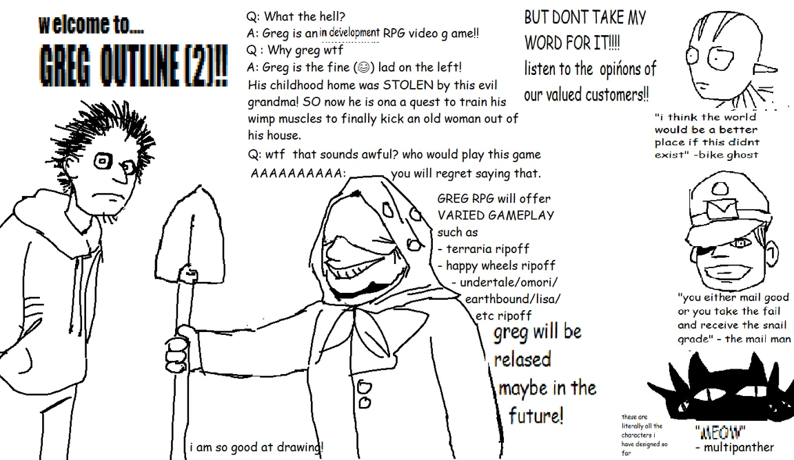
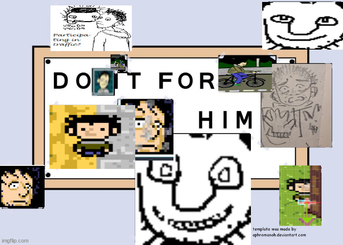
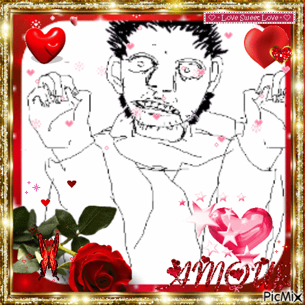
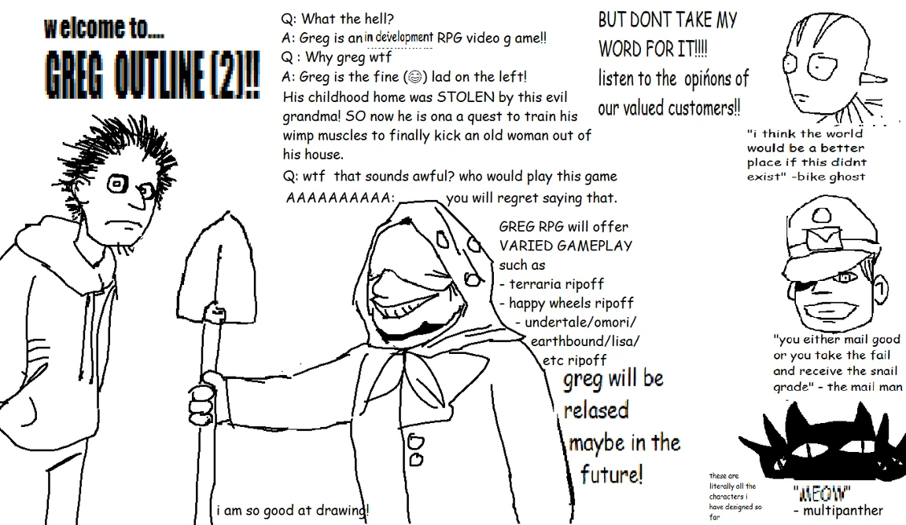
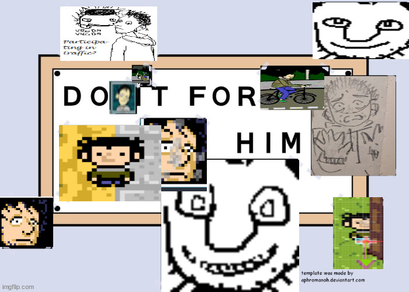
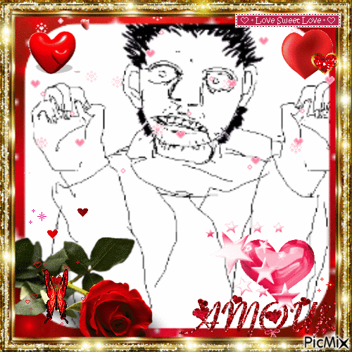

Greg is an RPG game by Murumart. It's still in development, so I'll actually be talking about its old demo that I got while it still existed on the internet. I lied. This isn't a review. I'll talk about how much I love Greg RPG.
You play as Greg, who returns to his hometown to see that an old lady is using his childhood house as a flower shop. But grandma's out for groceries, and it is Greg's opportunity to build up the power to kick her out. This MS-Painted town, however, soon proves to be troublesome, but only for Greg. Anyone who lays eyes on Greg has some kind of problem with him or a strong desire to exploit him for labour. My main evidence is that all the harmless NPCs have their eyes closed or away from Greg. Nobody looks straight into your eyes unless they have a job for you, be it delivering newspapers or cleaning an aquifer with soap (like in greg mining game, a very early version of the game).
The game was very entertaining, and never lost its fun even when it got challenging. The dialogue was hilarious and the characterization expressed through it was well-done. I was very impressed when I played the Demo, because the effort is very clear, such as in the visual effects. I particularly loved the way the radio sprite's dial moved with the music in Grandma's house. Besides the awesome effects, the music was incredible. Every track left a great impression and sweet after-taste, especially because of their clever use and details. The most noticeable example is the leitmotif of the bicycle and the bells that ring in each of its themes. Banger soundtrack. Extending from the music are the sound effects, which, even though they're such a small detail, I much loved hearing. The typing effect sure sounds like Comic Sans, and the menu clicks sound super great, because they, combined with the old-school look of the UI, are nostlagic to me.
I found the pixel art very lovely. The portraits of the bike ghosts look stunning. Shaders are used well throughout the UI and the map, and they look pretty. Above that, the art looks even better in newer versions. Right, what better art was there than the death screens? Those were funny. Buckle up, for Greg could die in many ways, but if you kill him on purpose, you should reconsider your morals. One notable visual detail is the fact that in battles and in the bike minigame, the character in focus is constructed like a puppet, with independently-animated limbs. What does that mean for you? The bike ghost's head bounces out when you attack it, with elastic wires being the only thing keeping it attached, and it's the best thing I laid eyes upon, but behold! You should see the ragdoll animation accompanied by explosions and several whacks when Greg flies out of the bike when you lose in the newspaper minigame. You're still reading? People are reading this? Since nobody is here I will let my awful headache take over and say that I love Greg. I want him. I can treat him right and I am going to kiss him right on the face. His grandma probably thinks that the's the most handsome boy in the world despite his raggedy-looking ass being ugly, but that won't prevent me from smothering that face.
There's cool graphics, music, and mechanics in the Greg game demo. There's a lot of love put into it and a lot of creativity in its ideas. Game of the year. I'm Greg Game's number one biggest fan and if there's a bigger fan than me I will not fight them but instead befriend them but joke's on you we're already friends I think.
{kind=link}
I'm the proud owner of copies of Greg lost media, and eyes that witnessed other lost content of [REDACTED]. Real ones know about [REDACTED].
The best quote probably:
Notable moments:
Note that the gif is edited, and that the game doesn't actually jump to the death screen like that. has to hit the ground miserably before the screen fades into a Game Over.
Cool Greg facts
- Greg has been in development since January 2023.
- Greg mining game was released on June 5th, 2022 and is the earliest playable version of Greg.
- Gleebungus.png
- The Greg RPG Tech Demo (August) was released in October 2022.
- You can fight grass blades.
- Greg can hit himself in confusion because he's experiencing withdrawal symptoms and is so distressed that he isn't paying attention to where he throws his punches.
- Greg had a collab with JackAric (by Aiden)
- Greg used to have a pet turtle.
- MDP.
{kind=link}
Gallery
Fanart shows credit on hover. If not mentioned, then the image is by Murumart.
 





Art and music used on this page are by Murumart, excluding the background image.